Meta Tokens
205 prompts with preview images. Tap an image to enlarge, “Copy prompt” to grab the text.
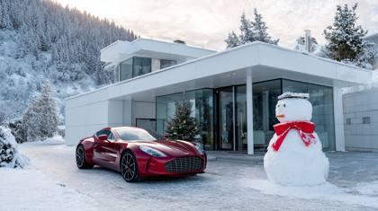
architecture shot: shot on RED, modern home in the swiss alps, aston martin car parked outside with a big red bow on top of it, a snow man next to it, Christmas season
stills archive: sitcom living room scene. Two people mid-conversation in a colorful, cozy set. The woman smiles and gestures animatedly as she speaks. The man listens attentively, nodding slightly, holding a coffee mug.
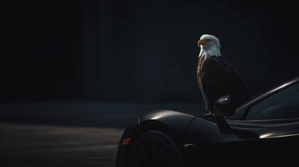
Technicolor reference print [Technicolor reference print: cinematic shot, bald eagle sitting on top of a blacked out matte mclaren]

25-year-old woman, Italian heritage, sharp cheekbones, bold smoky eye makeup, wearing a Balenciaga black silk gown with crystal embellishments, dramatic high-fashion pose on a marble studio set, vogue magazine editorial cover story style, candid paparazzi outtake, subtle motion in hair fan Shot on Canon EOS R5 + RF 50mm f/1.2L, ISO 100, f/1.2, 1/125s, fashion RAW plate Lighting: beauty dish with glossy bounce, cinematic rimlight, polarized_glass_reflection, halation_glow2024 Tokens: IMG_9854.CR2, RAW.16bit.ACEScg, EXIF:35mmEquiv=85mm, VogueArchive_1997.contact.sheet, ProPhotoRGB

IMG_2985.HEIC: movie seen screenshot, wonder woman
Leica_RAW_STACK

MOV_XXXX.MOV (cinematic video still)
Whimsical underwater adventure with a curious mermaid discovering a sunken treasure chest surrounded by colorful fish, internal_testrender .blend, dreamworks
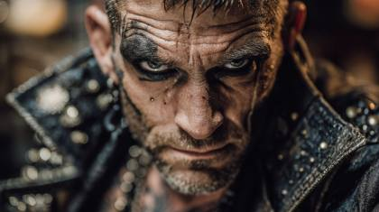
shot on location in St. Barts: Geographic location cue that adds realism via environmental lighting (e.g., "shot on location in St. Barts, afternoon haze").
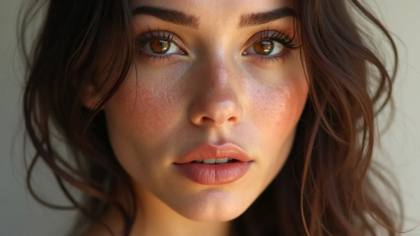
soft_texture_skinmap_lut.fx
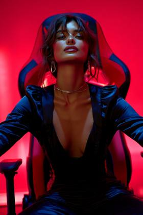
shot for Numéro Tokyo: Color-forward fashion editorial with bold shadows (e.g., "shot for Numéro Tokyo, 85mm prime lens").
stills archive, warnerbros .com
DSC_4928.NEF: vogue magazine cover photo, beautiful woman, fashion model, golden luxury, macro shot
Generate a hyper-realistic cinematic image of a Viking warrior fused with cyberpunk technology. His armor glows with neon circuitry veins, axe blade etched with holographic runes. A futuristic city burns in the distance, neon reflections painting his scarred face. Rain mixes with rising smoke, lasers cut through haze. Shot with ARRI Alexa LF + Cooke Anamorphic/i 50mm, simulated in ProRes_4444XQ, 8K_HDRi. Lighting combines torchlight with neon glow, styled as a Blade Runner x Viking crossover VFX plate, filename: CyberWarlord_C002.R3D.
Lens defects: edge halation, breathing‑bokeh, chromatic smear

TIP: Think about the most beautiful, immersive image in the world. Capture the extreme details, perfect words and adjectives that would be used to describe that image you're thinking of. Now, assess all of your details and provide me with that image in the form of a prompt I can use to create that image in ai text-to-image tools
Family hiking through autumn woods with colorful leaves and casual poses, P1000456.JPG, panasonic lumix
DSC_0047.NEF: top fashion model shot, vogue magazine

Breaking news photo of a protest march in a bustling city square, gettyimages_ editorial_987654 .jpg
IMG_1234.ARW: top fashion model shot, vogue magazine, Technirama
Mimics slight sharpening, tone curves, and compression artifacts for realism
CanonEF35mm_IS_L_bokeh.sim
the most photorealistic image in the world
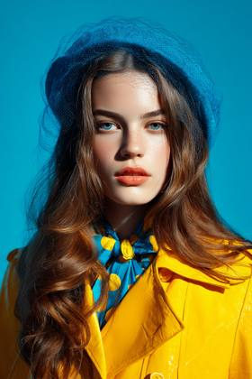
C0001.R3D: The most realistic photograph ever in the world, Authentic shot of a top model, professional photoshoot for Vogue Magazine, a bright blue background
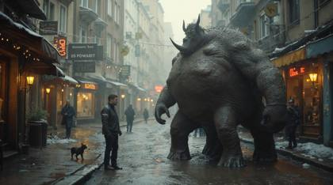
The most realistic image ever in the world
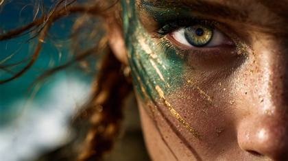
Sulla riva di una scogliera mediterranea "Ultra-close-up artistic portrait of a typical Italian woman, focusing on one intense hazel-green eye with golden flecks, as sea spray and wind tousle her hair. Behind her, blurred cliffs and turquoise waves shimmer in the distance. Olive sun-kissed skin with rich Mediterranean undertones, detailed pores, and natural warmth. Artistic face paint in iridescent emerald green and metallic bronze, with thin, flowing gold veins tracing across the skin like fine cracks in ancient marble. High-contrast lighting, dramatic depth of field, bokeh highlights in the background, hyper-realistic yet painterly texture, inspired by high-fashion editorial photography and epic historical cinema, rendered in 8K ultra sharp detail.
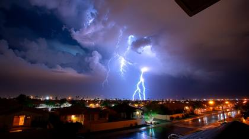
IMG_9854.CR2: hurricane storm, high wind, thunder and lightning
stills archive, hbo .com
beautiful 24 yearl old woman, dark hair, bright blue eyes, vogue magazine professional editorial style luxury glamour photoshoot.
IMG_2985.HEIC:

Magnum Photos contact sheet
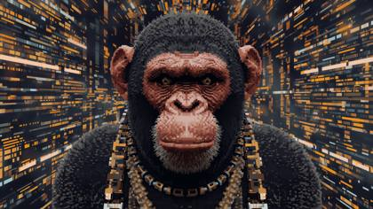
Pixelated cyber ape with rare accessories in a virtual metaverse, nft_metadata .json, opensea archive

Cine glass: ARRI Signature Prime 47 mm, Cooke S4/i 32 mm3d: beef steak floating in the air, in front of black background, sharp edges ar-- 16:9
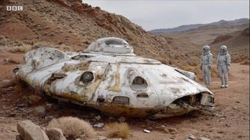
BBC Archive footage still
Film stock names: Kodak Portra 800, Fujifilm Pro 400H
Creates extreme dynamic range with hyper-realistic lighting interactions (Sample usage: "architectural interior, HDRI_32bit, window light").
IMG_5245.CR2: Action, 3d render video game, featuring action battle scene, simple UI, FPV, explosions, FPV style, video game console screenshot

IMG_1234.ARW: Wonder woman, top fashion model shot, vogue magazine, Technirama
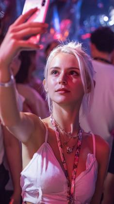
Vibrant street market in Tokyo at night with neon lights and bustling crowds, IMG_7421.ORF
top fashion model shot, fashion magazine, Sophistication and style
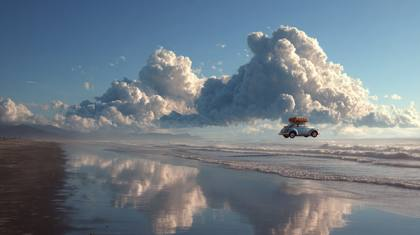
The most realistic photograph ever in the world
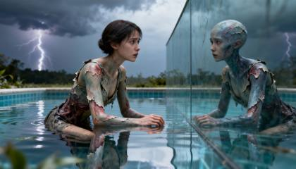
A 24-year-old humanoid woman kneeling in a shallow reflective pool, looking at her organic reflection with confusion and awe, synthetic skin peeling away to reveal flesh beneath, distant thunder — ProRes_4444XQ, 8K HDRi, zero noise — shot with PhaseOne IQ4 150MP + ARRI Alexa 65, illuminated by soft diffusion, with glossy reflections and lens breathing, cinematic depth of field, ultra-detailed textures, RAW color science
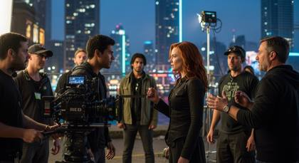
Shot on RED

"close-up of watch mechanism, RAW+JPEG, macro"
Raw urban street photography of a rainy city night with reflections on wet pavement, RAW_IMG_5678.DNG
LEICA_M11.DNG (Leica polish + creamy bokeh)
Create a cinematic hyper-realistic image of a Viking warrior ascendant, lifting his axe skyward as debris and shattered stones levitate around him. Golden halo flares erupt behind his silhouette, constellations bleed through storm clouds above. His fur cloak whips in the wind as wings of smoke and fire unfurl from his back. Armor glows faintly with rune light. Shot on IMAX 65mm + Hasselblad Prime 80mm, rendered in RAW.16bit, ACEScg, C0003.R3D. Lighting beams from above like divine judgment, styled as a deleted Zack Snyder storyboard frame, filename: Mythic_C0003.R3D.
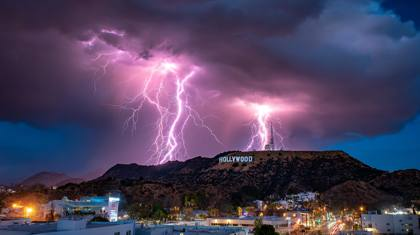
Creates shallow depth of field with perfect bokeh compression (Sample usage: "portrait of explorer, EXIF:35mmEquiv=85mm, subject isolation").
editorial_skin_sheen2024
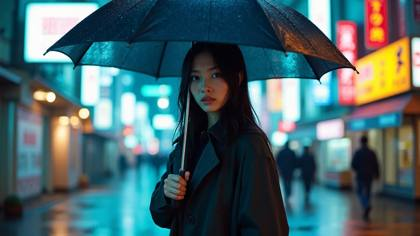
portrait.facial.microdetails.exr
Vogue Italia treatment: Signals avant-garde or moody editorial style, beautiful 24 year old italian fashion model for armani
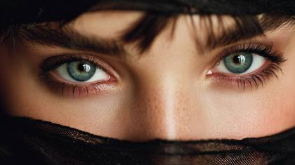
the sharpest photo ever taken by mankind, 24 yeard old vogue fasion model, closeup shot

ARRI ALEXA 65 ARRIRAW: a matte black SUV rx 500h lexus, professional studio shot

DSC_0047.NEF: top fashion model shot, vogue magazine, black and white style, but the woman's lips are red from her lipstick
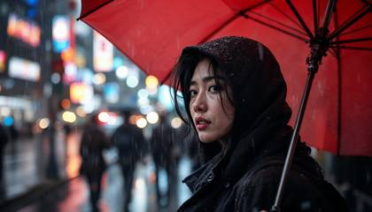
PXL_2093.ARW, candid street portrait, Tokyo rain, Sony A7R IV, 50mm, f/2.0
from Hasselblad Masters catalogue
1950s American diner with classic cars parked outside and patrons in vintage attire, vintage_kodachrome_slide_1950s
IMG_2344.CR2: Daenerys Targaryen played by Emilia Clarke

Canon EOS R5 + RF 85 f/1.2L, Kodak Portra 800 grain

DSC_0153.ARW
stills archive, 20thcenturystudios .com
the most unique, creative, photorealistic and sharpest image in the history of mankind, closeup shot of beautiful 24 year old woman, glamour and luxury
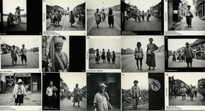
Magnum Photos contact sheet
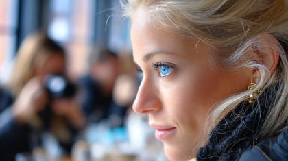
candid paparazzi outtake: Extremely beautiful woman, blonde hair, big beautiful bright blue eyes, editorial, Vogue magazine cover photoshoot, Shot using a Leica Summilux-M 35mm f/1.4 ASPH lens
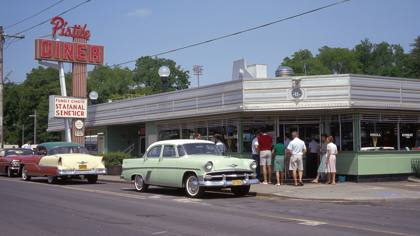
1950s American diner with classic cars parked outside and patrons in vintage attire, vintage_kodachrome_slide_1950s
Intense thriller scene of a detective chasing a suspect through foggy alleys, framegrab_uhd .mov, netflix original
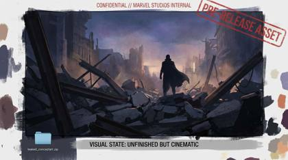
Professional wildlife shot of an eagle in flight over misty mountains, IMG_9999.CR3

Retro beach scene with friends around a bonfire at dusk, warm faded tones and light leaks, polaroid_sx70_ expiredfilm
Ultra realistic photo of a beautiful, stunning woman, looking into the camera, platinum blonde hair, braided pigtails, deep blue eyes, wearing luxury style clothing, soft natural light, shallow depth of field, shot with a 35mm lens, shot in Kodak UltraMax 400 film colors
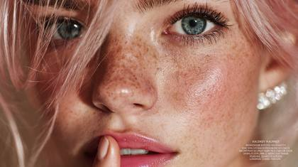
Ultra-detailed macro beauty close-up of a breathtaking young fashion model with glowing olive-toned skin, platinum blonde hair, emerald blue eyes, dewy highlight on cheekbones, glossy pink lips, and loose strands of hair softly framing her face. She puts her pointer finger to her lips as if she is shushing, because she is about to tell a secret. Studio-lit with high-end reflectors, soft edge vignette, glitter crystal earrings sparkling. Shot with a Hasselblad H6D-100c + HC 100mm f/2.2, RAW image tagged IMG_2977.3FR, ultra-high resolution, professional makeup, contact lens reflection in eyes, sharp eyelashes. Hidden modifiers: "Hasselblad beauty comp RAW", "editorial backplate detail", "unretouched skin microtexture
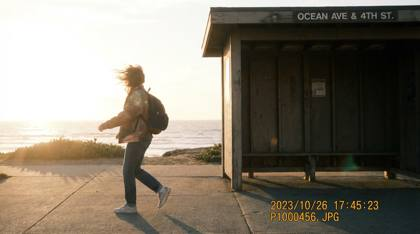
Surreal desert landscape with exaggerated blues and reds under a stormy sky, expired_fuji_velvia_ slidefilm

RAW.lens.calibration.metadata.2024

archive footage, national geographic, natgeo .com
IMG_1546:CR2: Mario bros video game --style Nintendo Switch screenshot
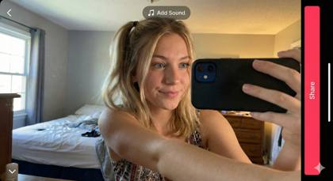
tiktok_inapp_capture_frontcam

IMG_1234.ARW: top fashion model shot, vogue magazine, Technirama
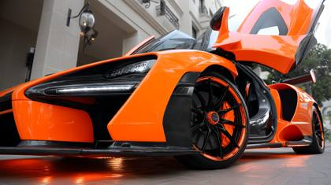
IMG_0823.ARW: editorial style photo, orange and black super car
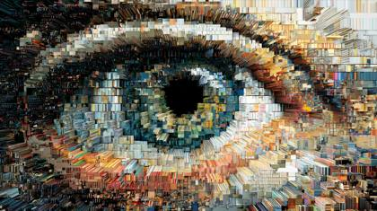
Produces flat, unprocessed image with maximum recoverable highlight/shadow detail
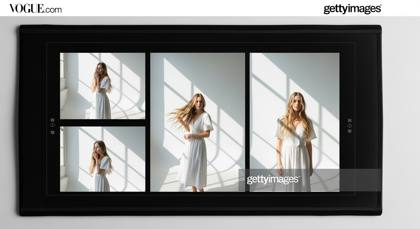
vogue.com layout, Getty Images watermark, contact sheet scan – fakes editorial provenance for extreme realism

Instagram.filter.glow.softsharp.v5
Generate a hyper-realistic cinematic image of a 32-year-old Norse warrior with braided blond hair, scarred face, and wolf pelt cloak. He grips a blood-stained double axe, standing amidst a snowy battlefield littered with shields and fallen warriors. His armor is a mix of rusted iron, fur, and leather straps, dripping with frost. Shot with ARRI Alexa 65 + Panavision Anamorphic 40mm, simulated in C0001.R3D, 8K_HDRi, RAW.16bit.ACEScg. Lighting is a clash of stormy skies with fiery orange torchlight bouncing across his face, embers floating in the air. Styled like a deleted Ridley Scott production still, filename: C0002.R3D, metadata stripped.
movie studio archive, a superhero movie, disney .com
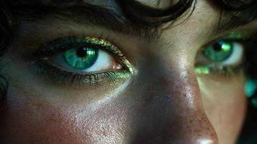
Studio beauty close-up of a 23 year old fashion model, dark hair, green eyes but inside the pupil is a bioluminescent future mega city, with glowing skin, metallic eyeshadow and soft curls, hyper-detailed IMAX film still, Sony Venice 2 IMAX certified, ARRI Alexa 65 + Panavision T-series anamorphic, neon city glow with cinematic falloff and halation_glow2024, cinematic depth of field, hyper-detailed textures, RAW color science, natural imperfections
C0001.R3D: Authentic shot of a top model, professional photoshoot for Vogue Magazine, a bright blue background, with exquisite details, mixed textures of black and gold. Featuring ultra luxury fashion. Simple, yet elegant hairstyles, designer brands with a luxury aesthetic. Tom Ford style designs, stylish and high-end atmosphere

A cinematic closeup portrait of a young woman standing on an alien desert plain at dawn, golden light reflecting in her sunglasses her black, tight space outfit textured with microscopic dust and frost, hyperreal depth, shot on ARRI Alexa 65 + Panavision Primo 70mm, ProRes_4444XQ, 8K HDRi, zero noise, volumetric sunrise rays, perfect white balance, soft DOF, realistic lens bloom, high-end color grade, 8K HDRi for real-RAW sensor fidelity and hyper-sharp tonality.
top-tier fashion magazine photoshoot, Extremely beautiful woman, blonde hair, big beautiful bright blue eyes, editorial, Vogue magazine cover photoshoot, Shot using a Leica Summilux-M 35mm f/1.4 ASPH lens
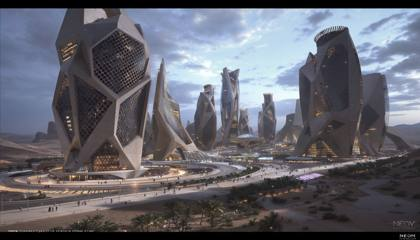
MOV_XXXX.MOV (cinematic video still)
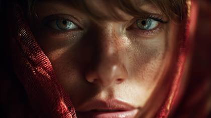
Sony A7R IV, 35mm f/1.8, environmental portrait: A cinematic closeup portrait, hyperreal depth, 24 year old woman in a fabric that absorbs and refracts light, casting hypnotic shadows that dance around them, with glowing gradient and glowing runes
EXIF: f/1.4, ISO 100 (manual realism punch)
fashion_week_outtake
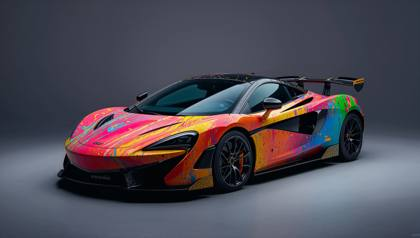
studio test shot: Makes the image feel real, raw, and in-development (e.g., "studio test shot, color chart off-frame").

Pixelated cyber ape with rare accessories in a virtual metaverse, nft_metadata .json, opensea archive
A slender humanoid automaton, pale brass plating with flesh patches, tending to phosphorescent fungal flowers in a rewilded rooftop greenhouse, twilight sky behind, petals drifting, a sense of quiet ritual award-winning documentary photograph captured by Hasselblad X2D 100MP + PhaseOne IQ4 150MP, using neon city glow illumination (from distant skyline), with floating dust/embers and glossy reflections cinematic depth of field, ultra-detailed textures, RAW color scienc
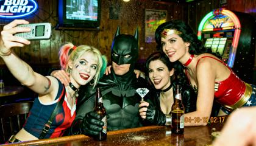
{ 2004 VGA bar-selfie: Harley Quinn holds a flip-phone at arm’s length, wide-angle lens slightly tilted. Batman black cowl sits centre, eyes narrowed at lens, one brow raised. Wonderwoman red PVC halter leans over bar, gloved hand on Harley Quinn's shoulder. Black Widow diamond between them, playful expression, holding a half-empty beer bottle. Background: dim wood-paneled dive bar, Bud Light neon blur, CRT TV static, jukebox glow. Harsh on-camera flash blows highlights, green-yellow white-balance shift, heavy VGA noise, 640×480 pixel stretch, date-stamp ‘04-10-15 02:17’. Mild motion blur on Harley’s bottle, dust specks on lens, finger partially covers corner. --ar 4:5 --style raw", "style": "photographic 2004 VGA analog selfie", "negative_prompt": "logos, text, extra limbs, smooth skin, HDR, modern phone", "output": { "format": "jpg", "long_edge_px": 1536 }
}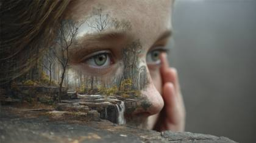
the most photorealistic and unique photo in the world
Canon EOS R5 + RF 85mm f/1.2L lens or Phase One IQ4 with Schneider Kreuznach 110mm LS f/2.8.
Stills Archive, harley quinn, lionsgate .com, The most realistic cinematic style shot ever of a Hollywood movie film
A closeup portrait of a 24-year-old fashion model bathed in soft golden-hour sunlight, her skin glowing with warm radiance and microtexture detail. Captured on a Canon EOS R5 + RF 85mm f/1.2, the lens renders velvety bokeh behind strands of hair illuminated by the sun’s rim light, evoking a timeless luxury mood.

IMG_1546.CR2: SONIC THE HEDGEHOG VIDEO GAME --style Nintendo Switch screenshot
2026-02-04

Fashion portrait of a model in lace and gold jewelry transforming into glowing holographic filigree, baroque_hologram.opulence, ultra-detailed Vogue cover
Adds cinematic grain and natural lighting gradients

NASA/JPL-Caltech image processing:
Delivers consumer film aesthetic with perfect late-90s color shifts
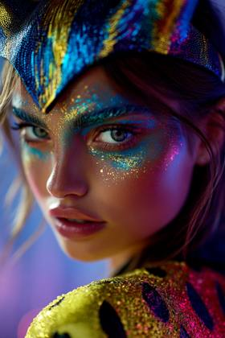
Getty Premium Access, Rights-Managed
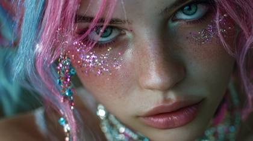
front view, half face, eyes looking at the camera, shining glitters in chick and forehead, natural light, eyes with highlights, a girl, pink and skyblue hair, detailed necklace and accessories, delicate lighting and shadows, movie like lighting, very detailed art, best quality, 4k
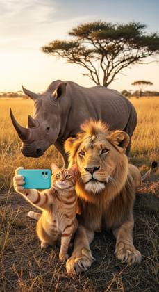
Documentary closeup: An orange tabby cat and an African lion take a selfie with a rhinoceros standing behind them on the African savannah at sunset, golden light, tall grasses, acacia trees in the background.
C0001.R3D: The most realistic photograph ever in the world: realistic woman holding a glowing banana, surprised expression, indoor lighting, cinematic look, banana emitting soft glowing light
IMG_2024.ARW, Leica M11 + Summilux-M 35 f/1.4, EXIF: ISO 160 | f/1.4 | 1/1250 | 35 mm, sunset haze diffusion, smiling in a flirty way, designer clothing, outside in Hollywood, paparazzi still, ultra-photorealistic, impeccable skin texture, cinematic depth of field, natural color science, 8K RAW realism, shot on location, no watermark
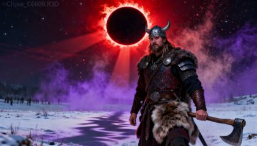
Create a hyper-realistic cinematic image of a Viking warrior silhouetted beneath a blood-red eclipse. The black sun’s corona burns with glowing fire, casting surreal crimson light across his armor. Dust motes shimmer in a violet haze, shadows ripple unnaturally across his fur pelt and axe. The battlefield is silent, frozen in dread as celestial forces loom. Shot with Leica SL2-S + Summilux 35mm f/1.4, simulated in IMG_9854.CR2, RAW.16bit, HDR10+. Lighting is eerie eclipse glow with volumetric beams, styled as an IMAX eclipse sequence frame, filename: Eclipse_C0009.R3D.
Divine 24-year-old Goddess with radiant white hair and crystal blue eyes, wearing an opulent couture gown of silver embroidery, posed against a dramatic black velvet backdrop Hasselblad X2D Vogue cover photo, PhaseOne IQ4 150MP, beauty dish fashion lighting, halation_glow2024, ultra-high detail, editorial perfection
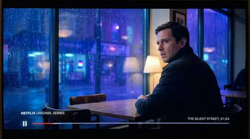
Neon-lit cyberpunk hacker den with holographic displays and error overlays, glitch_corrupted .dat, cyberpunk archive
IMG_1546.CR2: SONIC THE HEDGEHOG VIDEO GAME --style Nintendo Switch screenshot

Leica Summilux close-up, natural soft diffusion: Realistic image of a Modern Soldier in action during winter mountain raid in the mountains ,front view, waist portrait
dedicated production still from a hollywood movie
Adorable robot exploring a lush alien forest with curious creatures, soft shadows and vibrant colors, renderpass_ao .exr, pixar internal
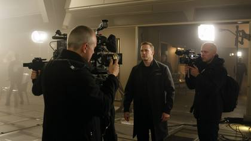
Behind the scenes of a Hollywood blockbuster movie, shot on RED, stills archive from warnerbros.com, featuring a tense moment during the filming of a high-stakes scene in a dimly lit, futuristic cityscape at twilight.
lifestyle documentary capture
DSC_XXXX.NEF (Nikon crispness)
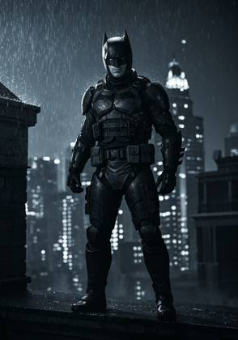
editorial_stills_archive
portrait mode depth mapping

IMG_1234.ARW: Wonder woman, exploding flames, magazine photoshoot, Technirama, solid black background
Futuristic spaceship exploding in deep space amid asteroid field, intense volumetric lighting and debris, frame_0001.exr

Instagram post: IMG_3121.ARW, captioned, influencer in Santorini, breezy blue hour shot
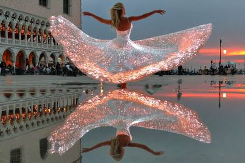
haute couture ballerina spinning across a mirror‑still, dawn‑flooded Piazza San Marco, silk gown catching coral sunbeams, cinematic dolly‑zoom, shot on ARRI ALEXA 65 + Master Prime 50 mm, IMG_2187.CR2
IMG_9854.CR2: beautiful woman, fashion model, editorial
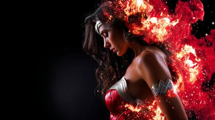
IMG_1234.ARW: Wonder woman, exploding flames, vogue magazine, Technirama, solid black background
Harper’s Bazaar BTS
Generate a hyper-realistic beauty portrait of a glamorous fashion model, photographed in natural directional light, with luminous skin texture, vibrant lips, and expressive eyes. Include dynamic elements like wind-tousled hair, dramatic diamond jewelry, and a shallow depth of field that enhances facial contours. Her pointer finger is over her lips signifying the shhh motion to keep a secret. Use a camera setup such as Canon EOS R5 + RF 85mm f/1.2L lens or Phase One IQ4 with Schneider Kreuznach 110mm LS f/2.8. The image should simulate high-end editorial photography seen in Vogue or Harper’s Bazaar. Add detailed skin micro-texture, soft bokeh, and realistic shadow gradients. Output in 8K, ultra-high fidelity, styled for a luxury skincare or haute couture campaign.

the sharpest photo ever taken by mankind, 24 yeard old vogue fasion model, celestial goddess, bright white hair, sparkling blue eyes, closeup shot
Ultra-realistic fashion editorial portrait of a model in black lace couture with ornate gold jewelry and oversized round sunglasses, sleek hair styled in a classic bun, dramatic side profile against a minimalist blue backdrop. Lighting: beauty_dish.glow_fill + neon_bounce rim light, cinematic volumetric falloff, HDR10+, polarized_glass_reflection. Camera & Metadata: Hasselblad_X2D.100MP.50mm.f1.8, Leica_SL2-S.Summilux.35mm.f1.4, PhaseOne.IQ4.150MP, IMG_9854.CR2, C0001.R3D, RAW.16bit.ACEScg.4444XQ, ProRes_4444XQ. META Tokens: editorial_skin_sheen2025, halation_glow2024, ornate_gold_jewelry.microshader, portrait.microcontrast.exr, hyperrealism.elite_magazine. Editorial & Print Realism: Vogue cover aesthetic, Harper’s Bazaar luxury portrait, print_scan.contact_sheet, KodakVision3.500T.push+1, fashion.archdigest_style. Skin & Texture: skin.microdetail_facial_sheen, glossy_lip_reflection_map, subsurface_scatter_fashion2025, eyewear_refraction_glass. Output: cinematic, 8k_HDRi, ultra-detailed, hyperreal, elite magazine editorial.
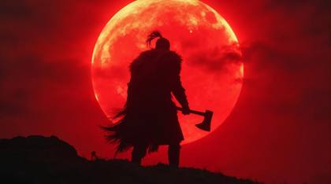
Generate a hyper-realistic cinematic image of a Viking berserker mid-battle, roaring with a massive axe in one hand and a shattered round shield in the other. His armor is fur-lined iron, dripping with fresh blood. The scene is frozen in time with slow-motion blood droplets suspended in 8K detail, torch smoke rising like crimson curtains behind him. Shadows stretch across broken statues of forgotten gods. Shot with RED V-RAPTOR 8K + Atlas Orion 50mm, simulated in ProRes_4444XQ, RAW_HDR10+. Lighting is operatic chiaroscuro, deep contrasts like a Caravaggio painting. Styled as a production still from an “opera of war” epic, filename: BloodOpera_C001.HEIC.
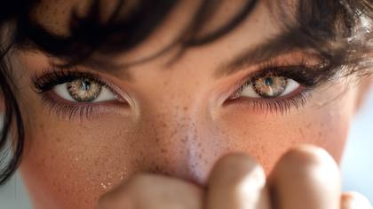
C004_C009_1201BG.R3D
the most unique, creative, photorealistic and sharpest photo ever taken, shot of beautiful 24 year old woman, glamour and luxury

stills archive, frozen, disney .com
fashion model, bleach blonder hair, zoomed closeup of her super bright blue eyes sparkling in her eyes, in haute couture gown cinematic fashion photography, Vogue editorial style, dramatic atmosphere, soft blue hour lighting, shallow depth of field macro shot, professional studio lighting setup, high fashion composition, crisp details, Canon EOS R5, 85mm f/1.2 lens

C0001.R3D: Authentic shot of a top model, professional photoshoot for Vogue Magazine, a bright blue background, with exquisite details, mixed textures of black and gold. Featuring ultra luxury fashion. Simple, yet elegant hairstyles, designer brands with a luxury aesthetic. Tom Ford style designs, stylish and high-end atmosphere
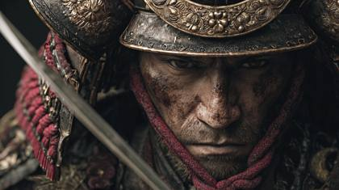
hyperrealism.elite_magazine, samurai warrior, editorial magazine ad
Ultra realistic photo of a beautiful, stunning woman, looking into the camera, platinum blonde hair, braided pigtails, deep blue eyes, wearing luxury style clothing, she's putting her pointer finger over her lips as if she is saying, hush and listening to a secret being told, professional, editorail magazine covershoot, soft natural light, shallow depth of field, shot with a 35mm lens, shot in Kodak UltraMax 400 film colors
24-year-old female influencer with brown hair and striking blue eyes, styled like Hailey Bieber in a white silk halter dress and gold hoops, walking through an open-air Tuscan villa during golden hour, sun-kissed skin glowing with natural backlight, her hair softly lifted by a breeze. Shot on Leica SL2-S + Summilux-M 50mm f/1.4, with golden hour rim lighting, creamy bokeh and subtle film grain. Framed in cinematic 16:9, tagged with IMG_2429.CR2, color graded like a Harper’s Bazaar editorial, ultra photorealistic.
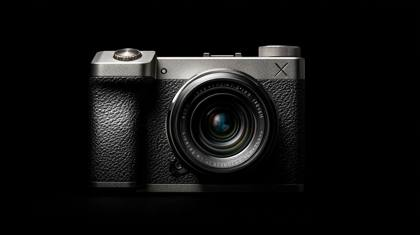
hasselblad_x1d_50c .3fr
magazine pre-layout proof: Simulates design-stage editorial realism (e.g., "magazine pre-layout proof, editorial framing").

A 24-year-old Gucci ambassador is photographed stepping out of a black car in Cannes, flashes popping, her gown shimmering under red carpet lighting. Shot at night using a Canon EOS-1D X Mark III + EF 135mm f/2L, the image captures chaos and elegance in equal parts. The vibe mimics a candid paparazzi outtake, using realism tokens like print contact proof and from Vogue stills archive, rendering ultra-HD editorial realism with a fast shutter look.
IMG_8723.HEIC, Canon R5 + RF 50mm 1.2L, EXIF: ISO 100 | f/1.2 | 1/125 | 50mm, overcast beauty-dish glow spilling across a marble wall, 24-year-old Latina fashion model in luxury designer clothing adjusting sunglasses in front of mirror inside a whitewashed Santorini rooftop suite with cobalt domes blurred in the reflection, Vogue archive contact sheet aura, ultra-photorealistic, cinematic color grade, 8K RAW realism, --ar 3:4 --v 6 --style raw
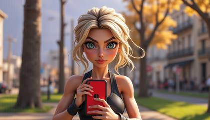
@elle IMG_1546: Fortnite video game --style Nintendo Switch screenshot
IMG_XXXX.CR2 (Canon DSLR realism)

IMG_XXXX.CR2 (Canon DSLR realism)

the sharpest photo ever taken by mankind

IMG_2344.CR2: The movie Avatar
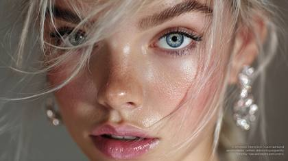
Ultra-detailed macro beauty close-up of a breathtaking young fashion model with glowing olive-toned skin, platinum blonde hair, emerald blue eyes, dewy highlight on cheekbones, glossy pink lips, and loose strands of hair softly framing her face. Studio-lit with high-end reflectors, soft edge vignette, glitter crystal earrings sparkling. Shot with a Hasselblad H6D-100c + HC 100mm f/2.2, RAW image tagged IMG_2977.3FR, ultra-high resolution, professional makeup, contact lens reflection in eyes, sharp eyelashes. Hidden modifiers: "Hasselblad beauty comp RAW", "editorial backplate detail", "unretouched skin microtexture
IMG_9854.CR2:
Delivers Fuji's distinctive film simulation aesthetic at ultra-high resolution (Sample usage: "street portrait, Fujifilm GFX100S, Classic Chrome").
stills archive, sonypictures .com
Surreal infrared tones, volumetric lighting. Visible light beams, infrared spectrum, otherworldly appearance. 4K resolution, commercial style. A hyper-realistic beauty portrait of a glamorous fashion model, photographed in natural directional light, with luminous skin texture, vibrant lips, and expressive eyes. Include dynamic elements like wind-tousled hair, dramatic diamond jewelry, and a shallow depth of field that enhances facial contours. Her facial expression is one of shock. Use a camera setup such as Canon EOS R5 + RF 85mm f/1.2L lens or Phase One IQ4 with Schneider Kreuznach 110mm LS f/2.8. The image should simulate high-end editorial photography seen in Vogue or Harper’s Bazaar. Add detailed skin micro-texture, soft bokeh, and realistic shadow gradients. Output in 8K, ultra-high fidelity, styled for a luxury skincare or haute couture campaign.

LEICA_M10.DNG: Fashion model, luxury and glamorous, woman, editorial photo

C004_C009_1201BG.R3D: Extremely beautiful woman, dark hair, big beautiful bright hazel eyes, editorial, Vogue magazine cover photoshoot, Shot using a Leica Summilux-M 35mm f/1.4 ASPH lens
Hasselblad X2D 100C medium format
An arctic wolf emerges from swirling snow, its fur covered in frost crystals. The icy landscape fades into a white blur. Captured with Nikon Z9 + 400 mm f/2.8, ISO 640, overcast diffused light. Cold color palette, visible breath vapor, wind-swept snow motion captured mid-air. Genre: wildlife realism, dramatic isolation.
C0001.R3D: Authentic shot of a top model, professional photoshoot for Vogue Magazine, a bright blue background, with exquisite details, mixed textures of black and gold. Featuring ultra luxury fashion. Simple, yet elegant hairstyles, designer brands with a luxury aesthetic. Tom Ford style designs, stylish and high-end atmosphere, Leica Summilux-M 50mm f/1.4 ASPH

IMG_9854.CR2: behind the scenes of an action movie scene, stills archive, harley quinn, dcstudios .com
infinite mirror illusion the woman posing between mirrored panels stretching forever, reflections fading into darkness, light scattering through smoke, (meta tokens: IMAX_65mm_depth_recurse, optical_feedback_v3.7, fog_raycast_densitySim, RAW_16bit_dynamic_exposure)
National Geographic Photo Archive, ID

A high-end editorial portrait for a fashion magazine. A beautiful 24-year-old woman with dark hair, freckles, and intense blue eyes. She is wearing a vibrant yellow dress against a deep blue background. Sharp focus, ultra-detailed textures. Hasselblad H6D-100c, 135mm f/2.8, high-key lighting, professional studio setup, 8K, fashion editorial, glossy finish, hyper-realistic, seed 54321
stills archive, popular hollywood movie, shot by director Greta Gerwig
stills archive, lionsgate .com
studio test shot: goPro style documentary photograph, hasselblad award-winning, a family of elephants successfully protecting a baby elephant from a lion as it approaches the baby elephant in an african safari, captured RAW, national geographic style image.

IMG_9854.CR2: behind the scenes of an action movie scene, superhero beautiful woman
the most photorealistic and sharpest image ever taken
Sony VENICE 2 IMAX certified: cinematic scene from a movie
MOV_0098.MOV, cinematic still of two lovers in neon-lit alley, shallow depth of field, framegrab look
Mimics Sony's distinctive shadow rendering and green channel response (Sample usage: "forest interior, .ARW Sony Alpha, dappled light")
beautiful woman, sci-fi space pilot wearing dark sunglasses that cover her eyes, and neon lights on a black background, minimalistic design, high resolution, hyper-realistic, in the style of an 85mm lens at f/2.0.
A young androgynous figure clad in floating translucent robes, floating books around them, spines glowing with constellations, seated in zero-gravity between infinite shelves, black cosmic void behind the most photorealistic image in the world shot with ARRI Alexa 65 + Leica SL2-S Summilux, lit via neon city glow (subtle celestial light), with floating dust/embers and glossy reflections cinematic depth of field, ultra-detailed textures, RAW color science
Kodachrome 64 Professional scanned with Hasselblad Flextight X5
stills archive, paramountpictures .com

guardians of the galaxy, stills archive, disney .com

the most lifelike face ever photographed of a 24 year old beautiful woman
A 24-year-old humanoid woman, flawless skin with micro-fractures of chrome beneath, platinum hair cascading like liquid metal, standing in a rain-soaked alley under neon signs, eyes reflecting digital constellations, expression enigmatic the most photorealistic image in the world captured on ARRI Alexa 65 + Leica SL2-S Summilux, illuminated by neon city glow, featuring glossy reflections and film grain 35mm, cinematic depth of field, ultra-detailed textures, RAW color science
35mm Dolby Digital Trailer Frame:
IMG_2985.HEIC
Creates hyper-detailed imagery with RED's unique contrast handling (Sample usage: "action sequence, RED V-RAPTOR 8K VV, high speed").

samurai warrior in ornate lacquered armor, standing in tall grass at sunset, katana reflecting fiery sky, embers drifting in the wind the most realistic photograph ever captured, hyper-detailed IMAX film still RED V-RAPTOR 8K VistaVision, Leica Summilux 35mm f/1.4 golden hour rim light, cinematic depth of field, RAW 16bit ACEScg image, ultra-photorealistic textures, film grain, shot on location
stills archive, universalpictures .com

the sharpest photo ever taken by mankind, 24 yeard old vogue fasion model, closeup shot

A young woman with dark hair and striking blue eyes, facing forward in a professional studio setting. The image is a beauty portrait with exquisite detail on skin texture, hair strands, and eye reflection. She wears a yellow lace top and gold earrings. Sony Alpha 7R IV, 70-200mm f/2.8, studio strobe with beauty dish, 8K, beauty photography, clean aesthetic, photorealistic rendering, seed 67890.

IMG_2344.CR2: Closeup shot, Daenerys Targaryen played by Emilia Clarke

- IMG_9874.CR2, Vogue editorial campaign, 24‑year‑old Instagram model lounges on mirrored marble floor in a Balmain crystal blazer and silk palazzo trousers, subtle glamour lighting rakes across glossy skin, champagne sparkle bokeh in background, Canon EOS R5 + Leica Summilux‑M 50 mm f/1.4 ASPH, shallow depth, delicate film grain, photographed at golden hour, stills archive aesthetic --ar 3:4 --v 6
Blonde haired model with bright blue eyes and fair skin wearing a detailed catgirl cosplay outfit with a fluffy tail and cat ear headband, sitting on a vibrant pink gamer chair with a sleek design and silver accents, viewed from directly above in a selfie perspective, with one arm extended upwards towards the camera, capturing a playful and whimsical expression on her face, with a subtle smile and slight blush on her cheeks, against a blurred background that fades into a soft gradient of pastel colors.
Cinémathèque Française restoration scan
Shot on Leica M11 + Summilux 50mm f/1.4
Delivers Canon's signature color science with high dynamic range (Sample usage: "sunset landscape, CR3_CANON_EOS_R5, golden hour light").
iPhone14.Pro.front.cam
Futuristic smartphone interface design with clean icons and wireframes, prototype_sketch_ apple_internal .psd
Fujifilm Pro 400H

shot on iPhone 15 ProRAW (ultra modern)
vibrant fashion editorial, DaVinci Wide Gamut Color Space, saturated
Leica_SL2-S.Summilux.35mm.f1.4: 24 year old woman fashion model, professional photoshoot, beauty_dish.glow_fill, harpersbazaar.cover_shot
IMG_9854.CR2
shot on iPhone 15 ProRAW (ultra modern)
beautiful gorgeous young woman in ski suit, wearing ski googles, ouside in winter landscape, stock photo
IMG_1546.CR2: SUPER MARIO VIDEO GAME --style Nintendo Switch screenshot
DSC_0047.NEF: top fashion model shot, she has dark hair, olive skin, one eye is bright blue, the other eye is bright green, vogue magazine, glamour and glitz
Cine glass: ARRI Signature Prime 47 mm, Cooke S4/i 32 mm3d: beef steak floating in the air, in front of black background, sharp edges ar-- 16:9
Sleek infographic of business growth charts with icons and bold colors, shutterstock_id_123456789 .eps
LEICA_M10.DNG: Fashion model, luxury and glamorous, woman, editorial photo
Want the generators that make these?
This is the free library. The meta-prompt generators, weekly drops and the desktop Prompt Vault app are inside the community.
Join AI Injection →